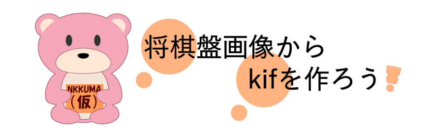

|
Tweet
開発：えぬっくま
Follow @nkkuma_service Tweets by nkkuma_service


次の順にお使いください。
くわしくは使い方ガイドをご覧ください。
次の点を確かめてから撮り直してください。
撮り方は撮り方のコツにもまとめています。
写真を送って読み取るまで、ふつうは数秒です。通信が遅いと長くかかることがあります。画面はそのままでお待ちください。
スマートフォン・タブレット・パソコンの標準的なブラウザ（Chrome、Safari など）でご利用いただけます。アプリのインストールや会員登録はいりません。
写真は縦長でも横長でもかまいません。
ぴよ将棋とKENTOは、結果の画面のボタンからそのまま開けます。ほかの将棋アプリには、KIFかSFENをコピーまたはファイル保存して渡してください。
写真1枚から作れるのは、その時点の局面です。指し手つきの棋譜が必要なときは、対局を動画で撮って変換する動画まるごと棋譜化（β版）をお使いください。
iPhone・iPad・Androidなら、盤の横に置いて指すだけで棋譜になるアプリ「コマドリ」もあります。App Storeで見る ／ Google Playで見る
発生したバグは、X（@nkkuma_service）か、メール（nkkumaservice@gmail.com）でお知らせください。起きた時刻と、どの画面で何をしたかを添えていただけると助かります。